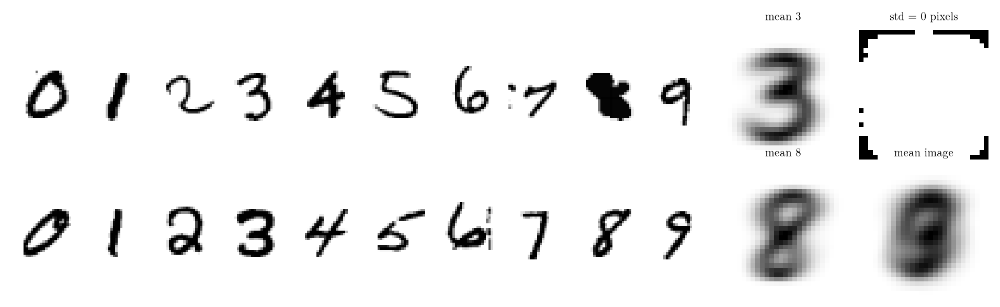
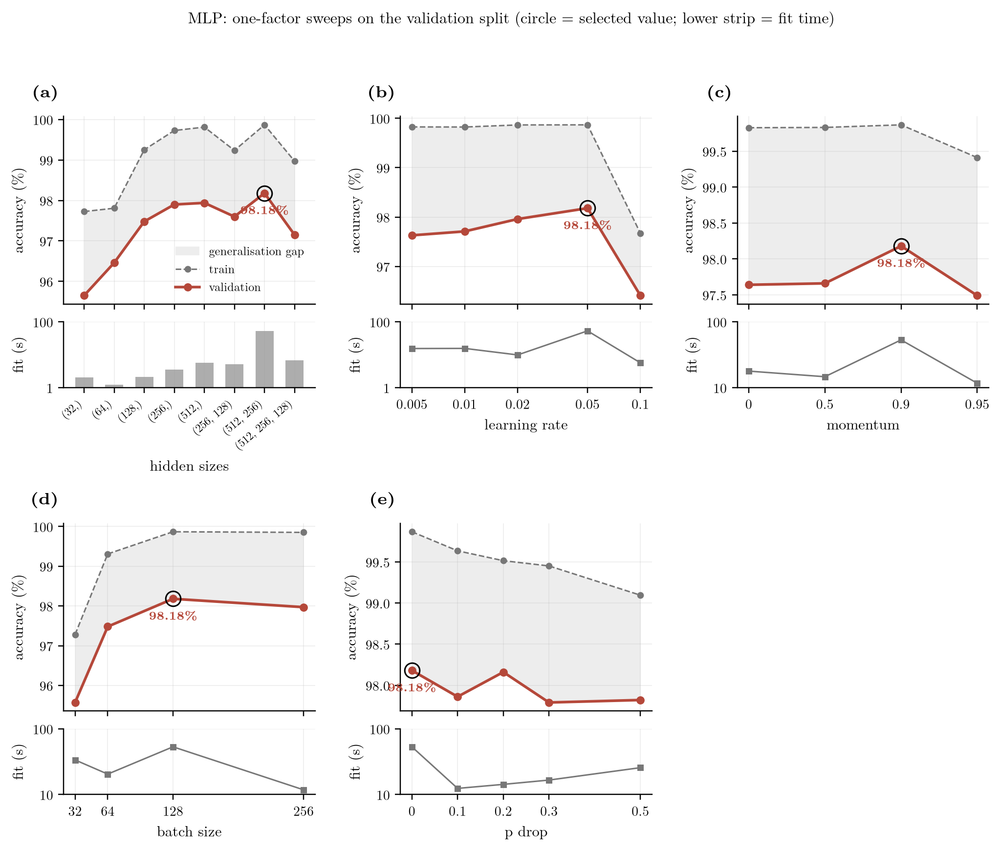
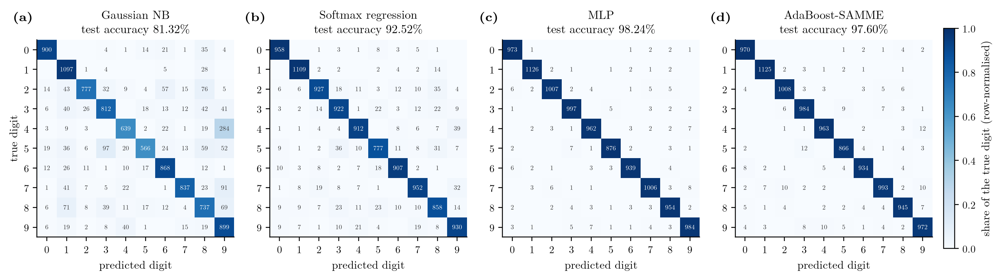
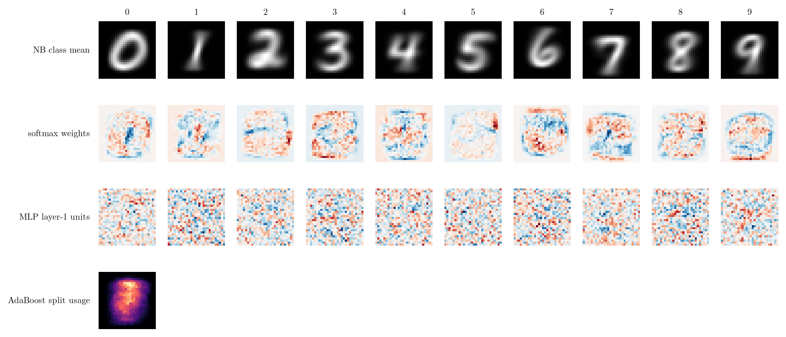
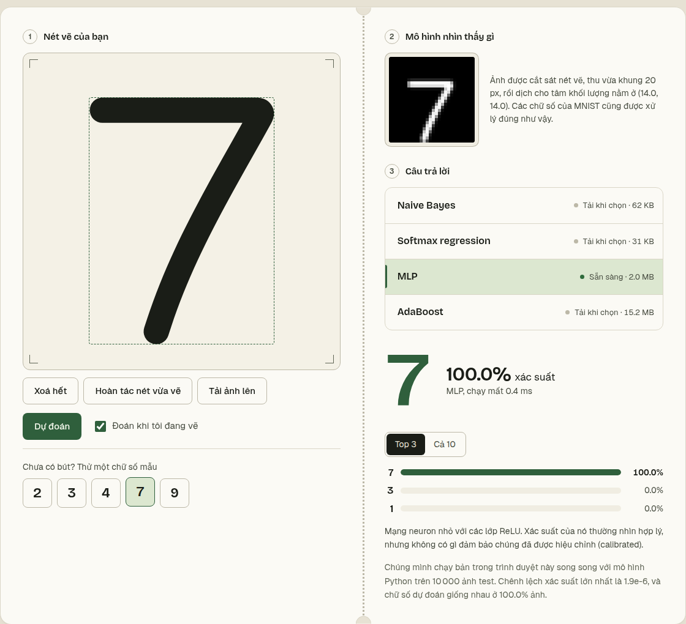

Nhận dạng mẫu · Đồ án giữa kỳ
Bốn bộ phân lớp tự cài đặt, đo trên cùng một giao thức và có đối chiếu với scikit-learn.
Bài toán

Giao thức
Train để học, validation để chọn, test để báo cáo. Tập test không có mặt trong hàm tìm siêu tham số, và một bài kiểm thử tự động giữ điều đó.
Trung bình và độ lệch chuẩn tính trên 50 000 ảnh train rồi dùng lại nguyên si cho validation, test và trình duyệt.
Bốn mô hình
mô hình sinh
Mỗi pixel là một phân phối chuẩn riêng theo lớp, giả sử các pixel độc lập.
mô hình tuyến tính
Một mẫu wk cho mỗi lớp, học bằng Gradient Descent trên cross-entropy.
mạng nơ-ron
Hai lớp ẩn ReLU, lan truyền ngược viết tay, momentum và dừng sớm.
ensemble
Hàng trăm cây quyết định có trọng số, cây sau tập trung vào ảnh cây trước làm sai.
Cài đặt
Gradient giải tích khớp sai phân hữu hạn, backprop khớp autograd, softmax khớp L-BFGS của scikit-learn, cây có trọng số khớp DecisionTreeClassifier.
Chọn siêu tham số

var_smoothing mặc định cho 56%, đổi sang 0.1 lên gần 80%.Kết quả trên tập test
Một seed (42), 10 000 ảnh test. MLP và AdaBoost khác nhau có ý nghĩa thống kê (McNemar chính xác). Khoảng tin cậy 95% của mỗi con số rộng cỡ ±0.3 điểm phần trăm.
Chi phí
| Mô hình | Test | Huấn luyện | Một ảnh |
|---|---|---|---|
| Gaussian NB | 81.32% | 0.4 s | 0.076 ms |
| Softmax regression | 92.52% | 12.7 s | 0.010 ms |
| MLP | 98.24% | 11.0 s | 0.042 ms |
| AdaBoost-SAMME | 97.60% | 13.6 phút | 18.705 ms |
CPU i7-13620H, không dùng GPU. AdaBoost duyệt 393 cây cho mỗi ảnh nên chậm nhất, và tệp mô hình nặng hơn 15 MiB.
Lỗi

Cả bốn đều nhầm 5 thành 3, và 4 hoặc 7 thành 9. Naïve Bayes nhầm 4 thành 9 tới 284 lần.
Đối chiếu
| Mô hình | Bản của nhóm | scikit-learn | Chênh |
|---|---|---|---|
| Gaussian NB | 81.32% | 81.32% | 0.00 |
| Softmax regression | 92.52% | 91.86% | 0.66 |
| MLP | 98.24% | 98.02% | 0.22 |
| AdaBoost-SAMME | 97.60% | 97.50% | 0.10 |
Softmax chênh 0.66 điểm vì L-BFGS của scikit-learn chạm giới hạn 1000 vòng, không dừng sớm như bản của nhóm. AdaBoost của hai bên dùng cách chia ngưỡng khác nhau nên thời gian không so được trực tiếp.
Mô hình học được gì

Naïve Bayes cho ảnh trung bình từng lớp, softmax cho vệt trọng số theo nét chữ, đơn vị ẩn của MLP gần như là nhiễu, AdaBoost dồn các lần chia nhánh vào vùng giữa ảnh.
Mở rộng
MLP giữ nguyên cấu hình, ba seed. Xoay tối đa 10°, dịch tối đa 2 pixel, co giãn 0.9 đến 1.1, chỉ áp dụng cho tập train.
Demo
Trang demo: xem README để lấy địa chỉ
Mô hình: huggingface.co/TranTrinhNhan1111/WriteRHand-MNIST

Kết luận
MLP cho độ chính xác tốt nhất với chi phí nhỏ. AdaBoost gần sát nhưng đắt gấp hàng chục lần. Softmax nhanh và dễ đọc. Naïve Bayes là mốc đơn giản, và cho thấy cái giá của giả thiết độc lập.
Một seed cho mô hình chính. Quét tuần tự chưa xét tương tác giữa siêu tham số. Thời gian đo trên một máy CPU. Kết quả chỉ nói về MNIST, chưa phải chữ viết tay nói chung.
Đóng góp
Trần Trinh Nhân (24280088) và Lâm Nhật Tiến (24280029). Tỉ lệ do hai thành viên thống nhất.
Phần hoàn thiện sau commit f9a602b được viết với sự hỗ trợ của Claude Code. Số liệu trong báo cáo, bảng và slide đều sinh từ tệp kết quả do chương trình ghi ra.
Cảm ơn thầy cô và các bạn đã lắng nghe.
Mã nguồn: github.com/TranTrinhNhan1/WriteRHand